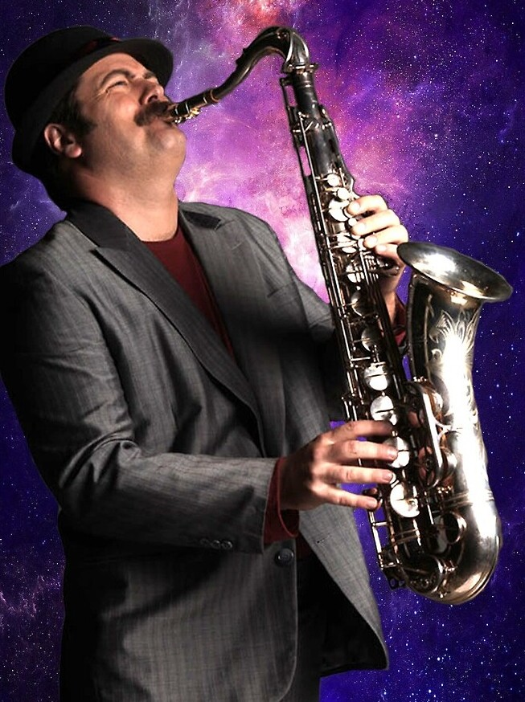

|  | O Jazz é um gênero musical originado nos Estados Unidos no final do século XIX, que se destaca pela sua rica história e expressividade única. Resultado da fusão de influências culturais africanas, europeias e afro-americanas, o Jazz incorpora elementos de improvisação, liberdade expressiva e interação entre os músicos. Com uma ênfase marcante na improvisação, o Jazz permite que os músicos explorem e desenvolvam ideias musicais no momento, criando solos e variações únicas a cada performance. Essa abordagem exige habilidade técnica, conhecimento teórico e uma profunda compreensão da linguagem do Jazz, tornando os músicos de Jazz verdadeiros virtuosos em seus instrumentos. Além da improvisação, o Jazz é conhecido por seus ritmos complexos e sincopados, especialmente o swing, que confere uma sensação de balanço e energia às músicas. A interação entre os músicos também é essencial no Jazz, pois eles criam uma sinergia especial, respondendo uns aos outros e construindo um diálogo musical envolvente. O Jazz transcendeu fronteiras e gerações, conquistando um lugar importante na cultura mundial. Seus festivais são realizados em diversos países, e sua influência pode ser encontrada em uma variedade de gêneros musicais. Com sua capacidade de emocionar e cativar, o Jazz é uma forma de arte atemporal que continua a atrair audiências e inspirar novos talentos ao redor do mundo. |